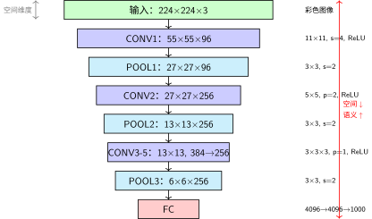

AlexNet：真正的未登峰，首登！#
2012 年，Alex Krizhevsky、Ilya Sutskever 和 Geoffrey Hinton 提交了一个叫 AlexNet 的模型 [KSH12]。它的架构并不神秘——本质上就是一个放大的 LeNet：
INPUT → CONV → POOL → CONV → POOL → CONV → CONV → CONV → POOL → FC → FC → FC → OUTPUT
和 LeNet 的区别是什么呢？更深（8 层 vs 5 层）、更宽（最多 384 个通道 vs 16）、更大（60M 参数 vs 61K）。但真正让所有人震惊的不是架构本身，而是它把错误率从 28.2% 砸到了 15.3%——几乎砍半。
那一刻，整个计算机视觉领域听到了炮声。深度学习不是玩具。它能爬真山。
为什么叫"炮火"？
2012 年之前，ImageNet 竞赛的进步是每年 1-2% 的缓慢爬升，主要由传统 CV 方法的渐进改进驱动。AlexNet 一举将错误率降低了 13 个百分点——相当于过去十年的进步总和被一个模型超越了。
这不是改进，是革命。
首登的秘密：不只是更大的 LeNet#
把 LeNet 放大就能赢？没那么简单。AlexNet 之所以能首登，靠的是四个关键设计——每一个都在回答"更大的山上会遇到什么新问题"：
设计 |
解决的问题 |
就像登山 |
|---|---|---|
ReLU 激活 |
Sigmoid/Tanh 在深层网络中梯度消失严重 |
高海拔需要高效呼吸——ReLU 不"憋气" |
Dropout |
60M 参数在 140 万张图上极易过拟合 |
每次攀登随机"关掉"一部分神经元——逼它们学会独立 |
GPU 并行 |
一张 GPU 装不下 60M 参数的训练 |
两个人抬装备——模型切成两半，两张 GPU 各算各的 |
数据增强 |
140 万张图不够 60M 参数学 |
同一块岩壁从不同角度看——随机裁剪、翻转、颜色抖动 |
备注
LeNet 用的是 Tanh，AlexNet 用的是 ReLU。 这不是随意的替换。激活函数 中我们讨论过：Tanh 的饱和区让梯度趋近于零，网络越深问题越严重。ImageNet 需要 8 层——Tanh 根本喘不过气。
ReLU 简单粗暴：\(f(x) = \max(0, x)\)。正区间梯度恒为 1，不会衰减。就像登山者在高海拔换上更高效的呼吸方式。
架构详解#
金字塔视角：数据流的维度变化#

AlexNet 金字塔架构：从图像到1,000类
金字塔的核心洞察：
空间维度递减：224×224 → 6×6（缩小约1,400倍——比LeNet的64倍剧烈得多）
特征通道递增：3 → 96 → 256 → 384 → 256（语义丰富度先升后调）
参数量分布：卷积层约3.7M（占6%），全连接层约57M（占94%）——与LeNet的97%全连接占比一脉相承
比LeNet更深更宽：8层 vs 5层，最多384通道 vs 16通道，对应更大的山需要更大的容量
和 LeNet 的对比
对比维度 |
LeNet-5 |
AlexNet |
|---|---|---|
输入 |
32×32 灰度 |
224×224 彩色 |
层数 |
5 |
8 |
参数 |
61K |
60M (×1,000) |
激活函数 |
Tanh |
ReLU |
正则化 |
无 |
Dropout |
训练硬件 |
CPU |
2× GPU |
首层卷积核 |
5×5 |
11×11（更大的山需要更广的视野） |
ReLU：高海拔的呼吸方式#
AlexNet 是第一个大规模使用 ReLU 的深度网络。为什么这很重要？
卷积：发现装备 中的 LeNet 用的是 Tanh。Tanh 的问题是：输入稍微大一点，输出就饱和在 ±1，梯度趋近于零。8 层 Tanh，梯度连乘 8 次——前面的层几乎收不到信号。
ReLU 换了一种呼吸方式：
ReLU 的直觉：在正区间，梯度永远是 1——不会衰减。在负区间，梯度是 0——神经元"关掉"。这种"要么全开要么全关"的方式，在深层网络中意外地高效。
首登之后：暴露的新问题#
AlexNet 证明了 ImageNet 可以爬。但成功的攀登者会立刻看到新的障碍：
11×11 的卷积核太大——一次看太多，浪费参数且容易过拟合（Inception：多尺度工具 和 VGG 会回答：用更小的核堆叠）
只有一条前向路径——如果某一层"学废了"，整条路就断了（ResNet：高原反应补给站 会回答：加跳跃连接）
对所有特征一视同仁——无论这个通道是"狗耳朵"还是"背景噪声"，权重一样（SE-Net：学会聚焦 会回答：动态加权）
首登永远不是终点。它只是告诉你：这座山更高，新问题更多。
代码实践#
import torch
import torch.nn as nn
class AlexNet(nn.Module):
"""AlexNet 的 PyTorch 实现
架构：5层卷积 + 3层全连接
关键设计：ReLU（高海拔呼吸）、Dropout（防止过拟合）
参数量：约 60M（LeNet 的 1,000 倍）
"""
def __init__(self, num_classes=1000):
super(AlexNet, self).__init__()
# 特征提取部分（5层卷积）
self.features = nn.Sequential(
# CONV1: 11×11 大核——ImageNet 需要更大的初始感受野
# 输出: (96, 55, 55)
nn.Conv2d(3, 96, kernel_size=11, stride=4, padding=2),
nn.ReLU(inplace=True), # {ref}`activation-functions`——高海拔呼吸方式
nn.MaxPool2d(kernel_size=3, stride=2), # 降采样
# CONV2: 5×5 核——缩小感受野，提取更精细特征
# 输出: (256, 27, 27)
nn.Conv2d(96, 256, kernel_size=5, padding=2),
nn.ReLU(inplace=True),
nn.MaxPool2d(kernel_size=3, stride=2),
# CONV3-CONV5: 连续3×3卷积——小核堆叠 = 感受野扩大 + 参数更少
nn.Conv2d(256, 384, kernel_size=3, padding=1),
nn.ReLU(inplace=True),
nn.Conv2d(384, 384, kernel_size=3, padding=1),
nn.ReLU(inplace=True),
nn.Conv2d(384, 256, kernel_size=3, padding=1),
nn.ReLU(inplace=True),
nn.MaxPool2d(kernel_size=3, stride=2),
)
# 分类器部分（3层全连接）
self.classifier = nn.Sequential(
nn.Dropout(p=0.5), # 每次随机"关掉"一半神经元——逼它们独立学习
nn.Linear(256 * 6 * 6, 4096), # 6×6 来自输入 224×224 经过5层卷积+3次池化
nn.ReLU(inplace=True),
nn.Dropout(p=0.5),
nn.Linear(4096, 4096),
nn.ReLU(inplace=True),
nn.Linear(4096, num_classes), # ImageNet: 1,000 类
)
def forward(self, x):
"""
Args:
x: 输入图像 (batch_size, 3, 224, 224)
Returns:
logits: (batch_size, num_classes)
"""
x = self.features(x) # 卷积特征提取
x = torch.flatten(x, 1) # 展平 → 全连接层输入
x = self.classifier(x) # 分类
return x
# 参数量计算
model = AlexNet(num_classes=1000)
total_params = sum(p.numel() for p in model.parameters())
print(f"AlexNet 总参数量: {total_params:,}") # 约 60,965,000
print(f"LeNet-5 总参数量: 61,706")
print(f"倍数: {total_params / 61706:.0f}×") # 约 988×
总结#
维度 |
内容 |
|---|---|
历史意义 |
2012年 ImageNet 首登——错误率从 28.2% → 15.3%，深度学习革命的第一声炮响 |
核心创新 |
ReLU（高海拔呼吸）+ Dropout（独立训练）+ GPU 并行 + 数据增强 |
参数量 |
60M——LeNet 的 1,000 倍。但爬的是一座大 1,000 倍的山 |
暴露的问题 |
大卷积核浪费参数、无跳跃连接、对所有特征一视同仁 |
首登成功的那一刻，欢呼声还没落地，真正的攀登者已经在看下一段岩壁了。
下一步#
AlexNet 证明了 ImageNet 能爬。但它用 11×11 的大卷积核一次性看太多——浪费参数，且只能看一个尺度。
山比想象的更复杂。不同的岩壁需要不同的工具。
Inception：多尺度工具——走。
参考文献
Alex Krizhevsky, Ilya Sutskever, and Geoffrey E Hinton. Imagenet classification with deep convolutional neural networks. In Advances in Neural Information Processing Systems, volume 25, 1097–1105. 2012.
贡献者与修订历史
查看详细修订记录
-
ea7e1062026-06-16 - Heyan Zhu: fix: cross-ref syntax, formulas, code, and structure across 5 chapters -
2af69852026-06-14 - Heyan Zhu: feat(model-serving): add quantization and pruning chapter, restructure for general-first narrative -
dc35df22026-06-14 - Heyan Zhu: refactor: unify into two-chapter mountain-climbing narrative